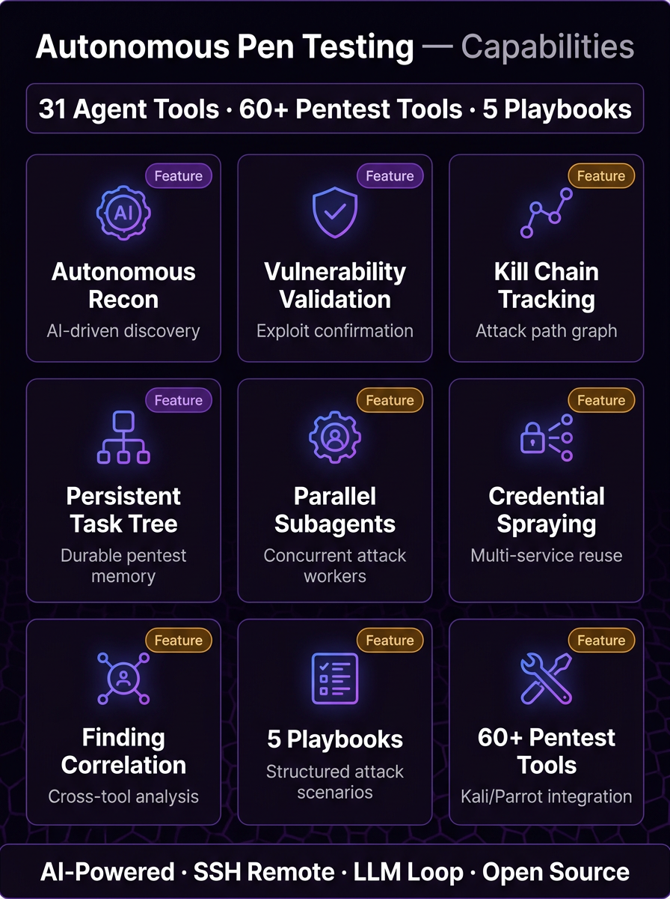
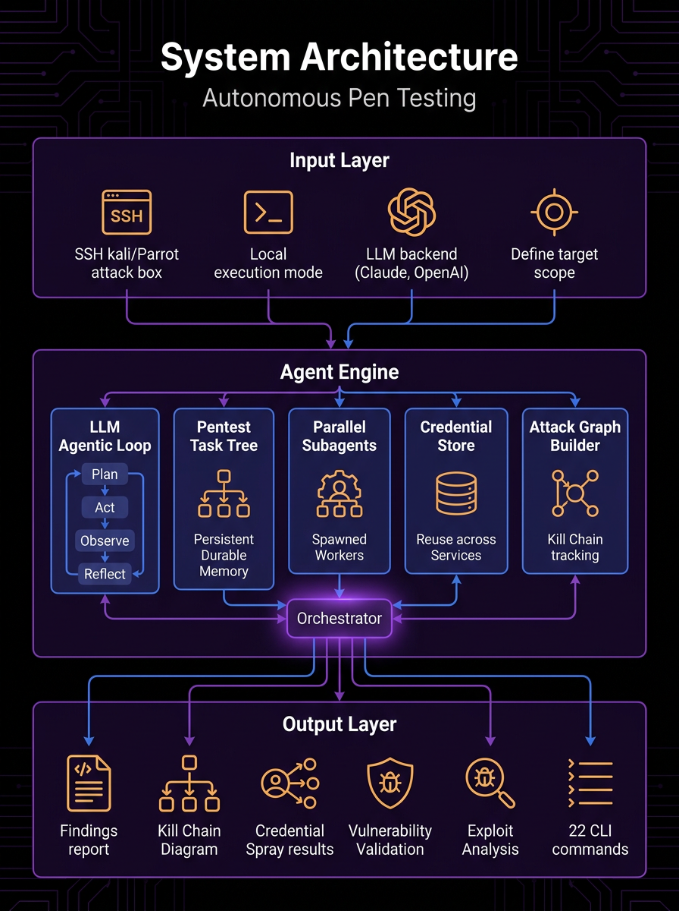
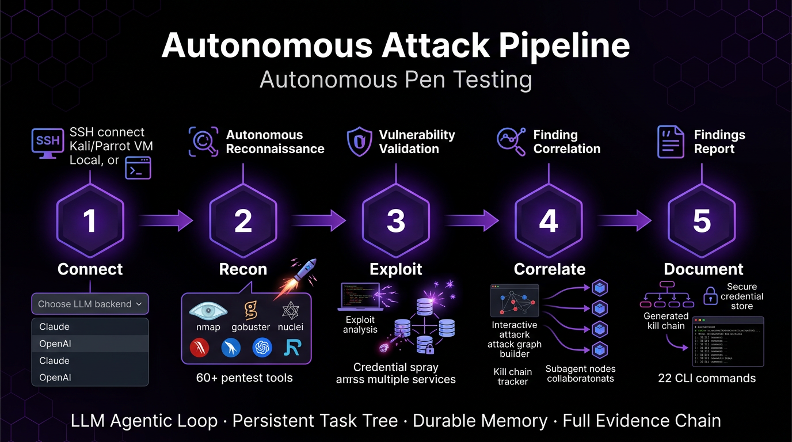
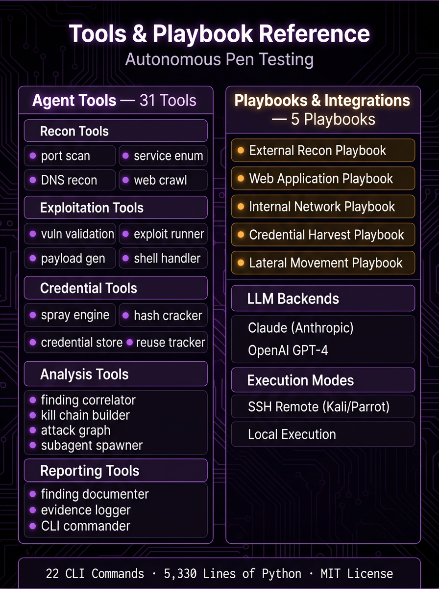

01Overview
The Autonomous Penetration Testing Copilot is a single-file Python agent that turns an LLM into a hands-on operator against a Kali/Parrot attack box. Instead of a human stringing together nmap, nuclei, hydra, and searchsploit, the copilot connects over SSH (or runs locally), autonomously executes security tools, reads and analyses their output, plans the next move, and documents findings, all inside an agentic loop driven by Claude or OpenAI. It behaves less like a scanner and more like a junior pentester that never loses the plot.
What makes it notable is the memory and judgment layered on top of raw tool execution. A persistent Pentest Task Tree is re-injected into every prompt so the agent stays oriented even after chat history is trimmed. A credential vault stores discovered secrets and sprays them across every service it finds. Raw tool output does not become a finding until it survives a six-stage validation pipeline, gets risk-scored into P1-P4 priorities, and is de-duplicated against every other tool that saw the same issue, so noise from tools that cry wolf is filtered out before it reaches the report.
It is built for red teamers, security engineers, and pentest teams who want to compress the mechanical parts of an engagement, recon chaining, exploit lookup, credential reuse, kill-chain documentation, without giving up control. Findings map to OWASP Top 10, PTES, NIST 800-53, and CWE; attack steps map to eleven MITRE ATT&CK stages; and safety guardrails (dangerous-command pattern matching plus approval gating and a stealth mode) keep the autonomy on a leash. The whole thing ships as one ~5,330-line file with a pytest suite, an offline demo runner, and JSON + HTML reporting.
02Key Capabilities
LLM-driven agentic kill chain
A single agentic loop (up to 25 iterations per turn) lets Claude or OpenAI call 31 tools, read results, and self-plan the next step end to end.
Persistent Pentest Task Tree (PTT)
A thread-safe hierarchical plan (todo/in_progress/done/blocked/skipped) is re-injected into every prompt so the agent's plan survives conversation-history trimming.
Dual-provider, any-endpoint LLM support
Runs on Anthropic Claude or OpenAI, and any OpenAI-compatible endpoint such as Ollama or vLLM via a --base-url flag.
SSH or local execution engines
Drives a remote Kali/Parrot box over paramiko SSH or executes locally via subprocess, with named persistent shells and background subagents for parallelism.
Autonomous recon pipelines
Four multi-tool pipelines (full, quick, subdomain, stealth) auto-chain nmap, whatweb, wafw00f, nikto, ffuf, nuclei, subfinder and httpx with evidence auto-capture.
Credential vault + multi-protocol spray engine
Stores discovered credentials and sprays them against every discovered service across 15 hydra service modules, respecting stealth-mode rate limiting.
Six-stage vulnerability validation
Every raw finding passes inventory to analysis to sanity_check to ruling to feasibility to validated, eliminating false positives before anything is reported.
Exploit analysis and risk prioritization
Scores confirmed findings by Impact x Exploitability / Detection Time with 8 exploitability modifiers and assigns P1-IMMEDIATE through P4-LOW priorities.
Cross-tool finding correlation
De-duplicates findings by host+port+CVE and boosts confidence when multiple tools agree (50 percent to 80 percent to 95 percent).
MITRE ATT&CK attack graph
Records each step of the intrusion across 11 kill-chain stages from Initial Access to Impact, viewable with the /attack command.
Reverse shells and payload generation
Manages netcat listeners and generates reverse-shell one-liners in 7 languages (bash, python, nc, nc_mkfifo, php, perl, powershell).
Safety guardrails and stealth mode
13 dangerous-command regex patterns trigger approval prompts, output is capped at 15K chars, and stealth mode auto-applies IDS-evasion flags and rate limiting.

03Architecture
Everything lives in one ~5,330-line pentest_copilot.py. A user message flows into a system prompt that dynamically injects context from 17 supporting systems (the Task Tree, credential vault, shells, findings, attack graph, and more), the LLM responds with text or a tool call, the tool is executed through an SSH or local executor after a stealth wait, its output is captured as evidence and fed back, and the loop repeats up to 25 iterations per turn before results are rendered to JSON and HTML reports.


04Project Structure
pentest_copilot.pyThe entire agent in one ~5,330-line file: providers, executors, 31 tools, 17 systems, agentic loop, reporting, and CLI.README.mdFull documentation: tool tables, pipelines, playbooks, architecture diagram, CLI reference, and version history.CLAUDE.mdEngineering guide with the complete tool/system reference, dict definitions, safety controls, and extension recipes.run_demo.pyOffline demo runner that stubs anthropic/openai/paramiko and emits a sample report as a smoke test.tests/test_task_tree.pyPytest suite (6 tests) covering the Pentest Task Tree data model, handler, serialization, and prompt injection with no LLM or network.test_data/pentest_report.jsonSample JSON pentest report produced by the demo runner.banner.svgRepository banner used in the README header.LICENSEMIT license..gitignoreExcludes IDE, secrets, and environment files from version control.05Security Controls

06Technology Stack
- Language
- Python 3.8+ (single-file, ~5,330 lines)
- LLM SDKs
- anthropic (Claude) or openai; OpenAI-compatible endpoints (Ollama, vLLM) via --base-url
- Remote execution
- paramiko (SSH to Kali/Parrot) or subprocess (local)
- Concurrency
- threading with Lock-guarded thread-safe classes and background subagents
- Testing
- pytest (tests/test_task_tree.py, 6 tests, no LLM/network) plus run_demo.py smoke test
- Reporting
- JSON export + HTML report (Catppuccin Mocha dark theme)
- Deployment
- Runs locally on or over SSH to a Kali/Parrot attack box; interactive CLI (exits 2 on connection failure)
- License
- MIT
07Quick Start
$ pip install anthropic paramiko # or: pip install openai paramiko $ export ANTHROPIC_API_KEY=sk-ant-... && python pentest_copilot.py --target 10.0.0.1 --ssh-host kali.local --ssh-user root --ssh-key ~/.ssh/id_rsa $ python pentest_copilot.py --target 10.0.0.1 --local # run on a local Kali/Parrot box $ python pentest_copilot.py --target 10.0.0.1 --local --stealth # rate limiting + IDS evasion $ python pentest_copilot.py --target 10.0.0.1 --local --provider openai --model llama3 --base-url http://localhost:11434/v1 $ In chat: 'Use the webapp playbook and run a full recon pipeline on http://10.0.0.1'; then /report to export JSON + HTML
08Compliance & Frameworks
09Integrations & Outputs
Explore Autonomous Penetration Testing Copilot
Full source, documentation, and deployment guides live on GitHub.